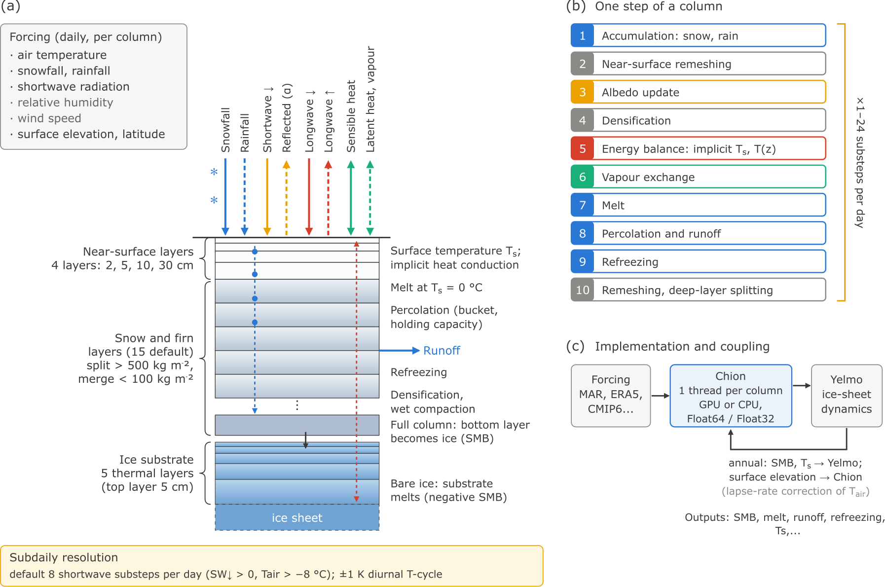

Model State And Step Flow
This page summarizes the state layout and the main execution order implemented in src/step.jl.

Schematic of the multilayer snowpack model: forcing, the layered snow and firn column with refined near-surface layers over the thermal ice substrate, and the order of processes within one time step.
State Model
Simulation owns both state snapshots:
sim.refis a deep copy of the initial state.sim.nowis the state advanced bystep!andrun!.
BESSIModel, PDDModel, and ITMModel are configuration objects. Use initial_state(model) when a workflow needs to seed or mutate state before constructing a Simulation.
For BESSIState, each column stores one active-layer count N[idx] together with layer-wise arrays for:
| Field | Meaning | Units |
|---|---|---|
mass | solid snow / firn / ice mass per layer | kg m^-2 |
mass_w | retained liquid water mass per layer | kg m^-2 |
density | bulk snow density per layer | kg m^-3 |
temperature | layer temperature | K |
mass_base | exported basal ice mass | kg m^-2 |
smb_ice | cumulative net mass forcing to the ice sheet | kg m^-2 |
runoff | cumulative liquid-water export | kg m^-2 |
melt | cumulative melted solid mass | kg m^-2 |
refreezing | cumulative refrozen liquid mass | kg m^-2 |
vapor_mass | cumulative net vapour exchange (deposition and condensation positive) | kg m^-2 |
sublimation | cumulative sublimated mass | kg m^-2 |
latent_heat_flux_sum | time-integrated latent heat-flux diagnostic | W m^-2 day |
shortwave_down_sum, shortwave_net_sum | time-integrated shortwave down and absorbed | W m^-2 day |
longwave_down_sum, longwave_net_sum | time-integrated longwave down and net | W m^-2 day |
sensible_heat_flux_sum, rain_heat_flux_sum | time-integrated sensible heat and rain heat | W m^-2 day |
Tsrf | snow–air (or ice–air) interface temperature | K |
albedo | surface albedo used by the energy solver | 1 |
snow_age_days | time since the last snowfall (albedo=:aging) | day |
w_snow_max | seasonal maximum snow water equivalent (albedo=:semix) | kg m^-2 |
thickness, wet_mass, bulk_density, liquid_water | column diagnostics refreshed by update_diagnostics! | m, kg m^-2, kg m^-3, kg m^-2 |
ice_temperature | temperatures of the ice-substrate layers, (ice_substrate_layers, column) | K |
The surface energy balance sums are positive into the surface. Under snow and on the ice substrate the terms are evaluated at the solved surface temperature, on bare ice without a substrate at T0. Net shortwave, net longwave, sensible, latent and rain heat add up to the energy into the column (melt and conduction), up to the linearization of the solve and the heat of snowfall, which is not among them.
PDDState stores snowpack_swe, smb_ice, runoff, and pdd_sum as column vectors. Its snow reservoir is capped by PDDModel.H_snow_max. Refrozen water leaves that reservoir as superimposed ice, and smb_ice therefore contains only snow-to-ice conversion minus ice melt. For every PDD step, precipitation is partitioned according to snowfall + rainfall = Δsnowpack_swe + Δsmb_ice + Δrunoff.
SnowpackForcing stores one forcing matrix per field in model-native units (K, kg m^-2 s^-1, W m^-2). Its constructor also accepts user-facing temperature and precipitation fields in Celsius and mmWE day^-1.
Host/device boundary
Public APIs accept BESSIState, PDDState, ITMState, and SnowpackForcing. Before a KernelAbstractions launch, Chion extracts concrete named tuples containing only the arrays required by that kernel. Complete state, forcing, model, simulation, and runtime objects are not kernel arguments.
Every launch uses an ndrange equal to the active-index or output length. Kernel entry points index that range directly under @inbounds; empty work sets are handled and validated on the host before launch.
Step Ordering
With the default diurnal substeps, a daily forcing step is first split into substeps (see Diurnal Shortwave Cycle); with the default longwave_scheme=:cloud_proxy, the incident longwave is derived once from the daily forcing before that split. Each substep then executes, for a snow-covered column:
- accumulation and rainfall input; snow falling on a previously bare surface takes $\min(T_{\mathrm{air}}, T_0)$; layers emptied below a trace threshold are removed and their water runs off
- near-surface remeshing to the
near_surface_layer_max_thicknesses_mprofile - albedo update
- densification
- energy solve of the snow column and the ice substrate
- turbulent vapour exchange (sublimation/deposition, or evaporation/ condensation at the melting point) on the surface layer
- melt, when the energy solve diagnoses melt energy; melt in excess of the snow melts the underlying ice and runs off
- percolation
- HTESSEL liquid-water compaction, when that scheme is active and liquid water remains
- refreezing
- near-surface remeshing again, so that the next energy solve sees the prescribed thin top layers, and the final albedo/snow-age update
If a column has no snow after accumulation, step! takes the bare-ice branch and skips the snow-column process chain. With an ice substrate (the default), the energy solve runs on the substrate with the top substrate layer as the surface; bare ice cools and must re-warm before melting, and melt and rain run off. Without a substrate (ice_substrate_layers=0), bare ice is held at the melting point and positive surface energy is converted directly into SMB loss.
For BESSI, smb_ice is the cumulative mass transferred to the ice-sheet reservoir through basal export and bare-ice surface mass changes. Monthly NetCDF smb_ice is the change in that cumulative field during the month.
Important Defaults
Ntot = 15mass_max = 500 kg m^-2mass_split = 300 kg m^-2mass_min = 100 kg m^-2near_surface_layer_max_thicknesses_m = (0.02, 0.05, 0.10, 0.30)ice_substrate_layers = 5,ice_substrate_top_thickness_m = 0.05rho_s = 315 kg m^-3for the constant fresh-snow-density schemeT0 = 273.15 K
The surface-energy defaults (seb_scheme=:semix, albedo=:dynamic with alpha_dry, alpha_wet, alpha_ice = 0.81, 0.70, 0.40, longwave_scheme=:cloud_proxy, SEMIX sensible heat factor 3.0 and stable coefficient 40, 8 diurnal substeps with a 1 K temperature cycle) were calibrated against MAR v3.14.3 over Greenland with daily forcing.
Advanced Entry Points
Most users should run through an Experiment (see Running Experiments) or a Simulation and run!. Coupled workflows can use init_integrator, update integrator.sim.forcing, call sync_forcing!, step the initialized integrator, and finish with finalize!. The lower-level state step! methods remain available for advanced workflows that manage state, forcing slices, and workspaces directly.
Chion.step! — Function
step!(state, forcing, time_index, workspace::ColumnarStepWorkspace)Advance all columns for one time step using the KernelAbstractions backend associated with state.mass. The same kernel runs on CPU or GPU depending on the storage backend of the state and workspace arrays.
step!(state, forcing, workspace::ColumnarStepWorkspace)Advance all columns through the full forcing sequence in forcing. The outer time loop runs in Julia, while each time step is advanced by the same KernelAbstractions batch kernel on the storage backend of workspace.